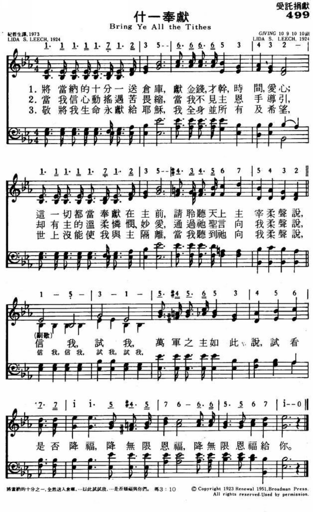

|
|
424 什一奉献 Bring Ye All the Tithes |
1 Bring ye all the tithes into the storehouse
All your money talents time and love
Consecrate them all upon the altar
While your Savior from above speaks sweetly
Chorus:
* Trust Me try me
Prove Me said the Lord of hosts
And see if a blessing
Unmeasured blessing
I will not pour out on thee
2 When my wa-v’ring faith in trial falters
When His guiding hand I cannot see
Then in wondrous love and tender mercy
Through His Word He says to me My child just
3 I have yielded Him my life forever
All I am or have or hope to be
Naught on earth my hold on Him can sever
While I hear Him say to me My child just |
1将当纳的十分一送仓库
献金钱 才干 时间 爱心
这一切都当奉献在主前
请聆听天上主宰柔声说
副歌：
*信我 试我
万君之主如此说
试看是否降福
降无限恩福
降无限恩福给你
2当我信心动摇遇苦畏缩
当我不见主恩手导引
却有主的温柔怜悯 妙爱
通过他圣言向我柔声说
3敬将我生命永献给耶稣
我全身并所有及希望
世上没能使我与主隔离
当我听到他向我柔声说
|
|
https://hymnstudiesblog.wordpress.com/2020/08/02/trust-try-and-prove-me/

499什一奉献 Bring ye all the tithes into the storehouse (

499 什一奉献

https://hymnary.org/text/hear_the_words_of_scripture_from_the_age

283．主的什一-707颂赞诗歌

第124首 -什一奉献
https://www.zanmeishi.com/tab/10532.html

|
| |
|
http://www.cathassist.org/music/music.php?id=6534#
第283首主的什一 The Lord’s Tithe ;
布利斯（P.P.Bliss 1838，7，9-1876，12，29）;作曲
救主昔日嘱咐信徒，天国福音要传遍， 不忘上帝宏恩大福 ， 主的什一当奉献。 主为救人,道成肉身， 荣耀尊贵全放弃， 感念救主舍身之恩，万分 音遍传扬； 主的什一,虔诚奉献， 主的应许必应验。
这首诗歌的主题是提醒人交纳十分之一的神圣义务，好让主所应许的福气降临在每一个基督徒身上。
本诗的词作者不详。
圣诗音乐家布利斯原是美国卫理公会的平信徒。他出身贫寒，但生性酷爱音乐。在他10岁的时候，有一天被一所房子里传出来的风琴声所吸引，就贸然进去，要求里面的阔太太再弹一曲，竟然因他衣杉褴褛而被赶出去。但他仍不灰心，继续学习唱歌和作曲。他曾谱了一首曲子寄给音乐家鲁特，请求指点，并要求鲁特：如果认为这首歌写得还可以，就送给他一支笛子，因他实在买不起。鲁特不但送他笛子，还写了一封信，鼓励他努力自学。
布利斯先是在一所木刻镜框商店做学徒，同时业余继续自学音乐。
后来，他终于考上纽约市的音乐师范大学。毕业后，他搬到芝加哥，以他的音乐天赋事奉上帝，在教会中教唱诗班，自己编曲。
谱曲，并且还独唱，然后再教会众齐唱。他的嗓音优美动听，音域宽广，唱起歌来很容易感动人。布利斯写圣诗的特点是主题广泛，灵感丰富，词曲并茂，通俗易晓。
一件偶然的事故，一篇动人的故事，一次讲道的感受，一节经文的启发，都可以成为他的题材。有时是主题，歌词，旋律于刹那间同时在脑海中形成。
比如他听见牧师讲约翰福音第三章16节的讲题后，便写成了一首《进恩门》（《颂赞诗歌》127首）的名歌。他先随惠特尔在美国各地布道，以后自编《福音诗歌》，并与桑基合编《圣诗与独唱》。他将稿费所得全部捐给了布道团。
1876年因火车失事，他为营救他的夫人及孩子而遇难。他在世的时间虽然短暂，但他没有辜负上帝的托付，留下了很多福音圣诗。
1876年，布利斯夫妇在美国俄亥俄州因火车失事遇难。
http://www.hymncompanions.org/Jul/27/stream.php
什一奉獻
Bring Ye All the Tithes
將當納的十分之一送倉庫，獻金錢，才幹，時間，愛心；
這一切都當奉獻在主前，請聆聽天上主宰柔聲說：
當我信心動搖遇苦畏縮，當我不見主恩手導引，
卻有主溫柔憐憫、妙愛，通過祂聖言向我柔聲說：
敬將我生命永獻給耶穌，我全身並所有及希望，
世上沒能使我與主隔離，當我聽到祂向我柔聲說：
（副歌）
信我，試我，萬軍之主如此說：
試看是否降福，降無限恩福，
降無限恩福給你。
 (請點耳機收聽)
(請點耳機收聽)
這首詩歌的作者是李玨（Lida Shivers Leech, 1873-1962, 見八月廿二日），作於1924年。
寇世遠師母何荔璇女士在她的自傳「心聲片片」中，對十一奉獻有如下的見證：
「有一次主日崇拜，講台傳的是什一奉獻的信息，我很受感動。
丈夫傳道，第一個不能實行的就是我，但我那有多餘的錢來什一奉獻？心中極其不安，幾經掙扎，決定先實行再說，我必須要守住什一奉獻的道理，同時計劃要追溯到從那年元月開始履行，以補心中對主的虧欠。
只是這麼大的一筆款，從那裡去勻支出來，於是心中暗自盤算，想到我所加入辦公室同仁合辦的儲蓄會，如果我能得標，大概可以湊足數目，於是心中默禱，求主成全。
果然，只一角之差，我得標了，得款總數，恰好是一至七月份什一奉獻數額的總計，生平第一次將厚厚一袋奉獻投下去，心中充滿了無限喜樂。
奇妙的是，自那一天開始，我們從不缺乏，而且豐豐富富，妙就妙在並沒有特別收入。……足證神的應許永不落空。
守住什一奉獻，不但上尖下流，並且打開天窗傾福下來，最難得的是一家大小沒生大病，省了不少醫葯費、平安、健康，這是何等的恩福！」（筆者按：在這之前，他們全家飽受貧病之苦）。
有一個半工半讀的女學生，好不容易儲蓄了一千美元，擬於暑假返國省親。
當她知道教會急需一輛交通車尚缺一千元時，就毫不躊躇地悉數奉獻。 出乎她意料，該年暑假，她被學校提名，榮獲了洛杉磯女會計師協會獎學金一千元及獎狀。
不但使神的家有糧，且使神的心意得到滿足。
中英文聖詩集參考
英文歌名 Bring
Ye All the Tithes
頌主新歌 499
頌主新歌(中英雙語) 505

https://hymnary.org/text/hear_the_words_of_scripture_from_the_age
[Hear the words of Scripture from the ages past]
Representative Text
1 Hear the words of Scripture from the ages past,
"Bring ye all the tithes into the storehouse."
Make a consecration that will ever last,
Trusting for the promised blessing.
Chorus:
"Bring ye all the tithes into the storehouse,
And prove me now," saith the Lord of hosts;
And I will pour you out a blessing,
There shall not be room enough to receive it."
2 Do you seek to know the Holy Spirit's pow'r?
"Bring ye all the tithes into the storehouse."
Live in sweet communion with Him hour by hour,
While He gives the promised blessing. [Chorus]
3 Is there aught that stands between you and your Lord?
"Bring ye all the tithes into storehouse."
Bring them on conditions promised in His word,
And He'll pour you out a blessing. [Chorus]
4 Lift your heart this moment, claim Him Lord and King,
As ye bring the tithes into the storehouse;"
Trust the blessed promise, and your praise shall ring.
From the heart He is possessing. [Chorus]
5 Let the anthems roll in grandeur thro' the skies,
Having bro't the tithes into the storehouse;
Joyous hallelujahs from our hearts arise.
For we have the promised blessing. [Chorus]
Source: Christ in Song: for all religious services nearly one thousand best
gospel hymns, new and old with responsive scripture readings (Rev. and Enl.)
#239
Words: Helen
E. Rasmussen, 1899.
Music: Henry
L. Gilmour (🔊 
 ).
).

[Hear the words of Scripture from the ages past]
Composer: Henry Lake Gilmour
Published in 11
hymnals
https://hymnstudiesblog.wordpress.com/2020/08/02/trust-try-and-prove-me/
No Commentson Trust, Try, and Prove Me
Trust, Try, and Prove Me
leech2

(photo of Lida Shivers Leech)
“TRUST, TRY, AND PROVE ME”
“Bring ye all the tithes into the storehouse….and prove Me now herewith, saith
the Lord of hosts…” (Mal. 3:10)
INTRO.:
A song which exhorts us to bring all our gifts to the Lord and prove Him is
“Trust, Try, and Prove Me.” The text was written and the tune (Giving) was
composed both by Sarah Elizabeth “Lida” Shivers Leech, who was born on July 12,
1873, at Mayville, NJ. After spending her childhood at Cape May Court House, NJ,
she attended Columbia University and Temple University, and became an organist.
travelling extensively as a musician in evangelistic services. During her life,
she produced some 500 hymns. “Trust, Try, and Prove Me” is dated 1923 and was
copyrighted by Charles Hutchinson Gabriel. It first appeared the following year
in Robert H. Coleman’s Harvest Hymns. In Coleman’s 1926 book The Modern Hymnal,
it was indicated that the hymn had become the property of Coleman. When the
copyright was renewed in 1951, it was owned by Broadman Press. Other hymns by
Mrs. Leech include “God’s Way Is Best,” “I Have Redeemed Thee,” “No Fault in
Him,” “Some Day He’ll Make It Plain,” “The Sweetest Song,” “Thine for Service,”
When the Veil Is Lifted,” and “Win One Every Day.” Living for many years in
Camden, NJ, she apparently relocated at some time to California, because she
died at Long Beach, CA, on Mar. 4, 1962.
Among hymnbooks published by members of the Lord’s church during the twentieth
century for use in churches of Christ, “Trust, Try, and Prove Me” has, so far as
I can tell, neither appeared nor is found in any. Among other hymnbooks in my
collection, it was found in the 1940 Broadman Hymnal and the 1964 Christian
Praise both published by Broadman Press; the 1968 Great Hymns of the Faith and
the 1979 Praise: Our Songs and Hymns both published by Singspiration Music; the
1972 Living Hymns published by Encore Publications; and the 1991 Baptist Hymnal
published by Convention Press.
The song impresses upon our minds the importance of making sure that we give our
best to the Lord so that we can receive His richest blessings.
I. Stanza 1 encourages us to give
“Bring ye all the tithes into the storehouse,
All your money, talents, time, and love;
Consecrate them all upon the altar,
While your Savior from above speaks sweetly:”
Perhaps one reason why this song has not been used in any of our books is that
it mentions “tithes,” and it may be that hymnbook editors among us were afraid
that folks might get the idea that churches of Christ teach tithing. Tithing,
literally giving a tenth of one’s substance, was an Old Testament command which
is not specified in the New Testament. However, we are commanded to give to the
Lord generally: 2 Cor. 9:6-7. If we can read Old Testament passages about tithes
and make the application to our giving without teaching tithing, we should be
able to do the same thing in song.
The fact is that under the New Covenant, the Lord does not specify that we give
Him a tenth, but demands that we actually devote and dedicate to Him
everything–money, talents, time, and love–in doing His will, counting all things
of this world as loss for Christ: Phil. 3:7-8
These things we consecrate upon the altar, again a figurative expression drawn
from the Old Testament to indicate that we must present ourselves and all we
have as living sacrifices for the Lord: Rom. 12:1-2
II. Stanza 2 encourages us to trust
“When my wavering faith in trials falter,
When His guiding hand I cannot see,
Then in wondrous love and tender mercy,
Through His word He says to me, ‘My child just…'”
There are times when trials and tribulations of life may cause our faith to
falter, just as the wind and the waves did to Peter: Matt. 14:26-31
At such times, we may not be able, as well as at other times, to see or be aware
of God’s hand guiding us because of our fears and doubts: Matt. 21:21
However, regardless of what happens to us in this life, we can always trust in
God’s love and tender mercy to provide for us and our needs: Matt. 6:25-34
III. Stanza 3 encourages us to yield
“I have yielded Him my life forever,
All I am, or have, or hope to be;
Naught on earth my hold on Him can sever,
While I hear Him say to me, ‘My child, just…'”
Yielding our lives to Christ is symbolized in scripture by taking up the cross
and following Him: Matt. 16:24
This means giving to Him all that we are, have, or hope to be, meaning that we
should lay treasures in heaven rather than on earth: Matt. 6:19-20
When we have this kind of attitude, then there is nothing on earth that can
sever or separate us from His love: Rom. 8:38-39
CONCL.: The chorus completes the thought of each stanza:
“Trust Me, try Me, prove Me,
Saith the Lord of hosts, and see
If a blessing, unmeasured blessing,
I will not pour out on thee.”
There are not many hymns in our books about giving. Maybe hymnbook editors did
not want to seem as if they were asking for money! More likely, there are just
not that many good songs on the subject. I have always been impressed with this
one. Just as He did to the Israelites during their restoration to Jerusalem
following their captivity, He still calls on us to give Him our very best,
saying, “Trust, Try, and Prove Me.”
https://zh.wikipedia.org/wiki/%E4%BB%80%E4%B8%80%E5%A5%89%E7%8D%BB
維基百科，自由的百科全書
跳至導覽跳至搜尋
什一奉獻（或什一稅、什一捐），常用於指猶太教和基督宗教的宗教奉獻，歐洲封建社會時代用來指教會向成年教徒徵收的宗教稅。
源於《聖經舊約》時代，其希伯來文原意是「十分之一」。在古代近東的國家，其中有迦南、腓尼基、阿拉伯等國都有什一奉獻的習俗以維持崇拜及國家支出。[1]
據《聖經·創世記》記載，亞伯拉罕把所得的十分之一獻給撒冷城的麥基洗德，這普遍被視為什一奉獻之起源。直至摩西律法將其具體制度化地執行，以色列人將此獻給上帝耶和華及支持利未支派的事奉工作。[2]在4世紀以前的基督教會並沒有奉行什一奉獻，信徒隨自己意願自由捐獻。自羅馬帝國將基督教納為國教後，教會開始鼓吹徵收。[3]在第六世紀以前，什一奉獻又漸漸在天主教和西歐普及。及至公元567年和585年，什一奉獻被提到的大公會議，並最終採納為對教會奉獻的必要標準。[3]
公元779年法蘭克王國查理大帝訂立法律實施什一稅，西歐各國在10世紀中葉相繼實行，視之為稅金。宗教改革運動之後，什一稅制仍在天主教和基督新教國家裡繼續執行。羅馬教廷與德意志地區的皇帝在1563年召開特倫多大公會議重申教徒必須繳付什一稅。[3]隨後歐洲國家政權與教會間發生矛盾，歐洲國家逐漸廢除此稅制，以其它的稅收形式取替。時至現代，仍有一些基督教派引申《舊約聖經》，規定信徒實行什一奉獻；另一些基督教派則鼓勵信徒憑信心奉行什一奉獻，以應付教會運作的財務需要和開支。
摩西律法下的什一奉獻[編輯]
根據摩西律法所載，以色列人的一切出產之十分之一都當歸給上帝耶和華。十分之一與祭物要獻在指定地方，祭司會將其作獻祭及利未支派之酬勞，每三年用當年土產的十分之一來幫助社會內的有示弱細小眾。相關的重點條例如下：
|
“ |
地上所有的、無論是地上的種子、是樹上的果子、十分之一是耶和華的、是歸給耶和華為聖的。人若要贖這十分之一的甚麼物、就要加上五分之一。凡牛群羊群中、一切從杖下經過的、每第十隻要歸給耶和華為聖。不可問是好是壞、也不可更換、若定要更換、所更換的與本來的牲畜都要成為聖、不可贖回。這就是耶和華在西乃山為以色列人所吩咐摩西的命令。（利未記27:30-34） |
” |
|
“ |
你要把你撒種所產的，就是你田地每年所出的，十分取一分；又要把你的五穀、新酒和油的十分之一，並牛群羊群中頭生的，喫在耶和華你神面前，就是他所選擇要立為他名的居所。這樣，你可以學習時常敬畏耶和華你的上帝。……每逢三年的末一年，你要將本年的土產十分之一都取出來，積存在你的城中。在你城裡無分無業的利未人，和你城裡寄居的，並孤兒寡婦，都可以來，喫得飽足。這樣，耶和華你的上帝必在你手裡所辦的一切事上賜福與你。（申命記14:22-23,28-29） |
” |
類似的中國的什一稅[編輯]
在周朝，當時實行徹法，除了公田之外，另外農民還要將其所得的十分之一納予國家[4]，但這並非宗教稅。在春秋戰國時代之後，這種井田制度便逐漸不獲採用。
伊斯蘭中[編輯]
在古代伊斯蘭國家，耕作官地的農民需繳交收成1/10，名哈拉吉稅。
參考文獻[編輯]
-
^ 當納之十分之一 （頁面存檔備份，存於網際網路檔案館），武林英雄帖
-
^ 《聖經·民數記》18:21,24
：「凡以色列中出產的十分之一、我已賜給利未的子孫為業、因他們所辦的是會幕的事、所以賜給他們為酬他們的勞。……因為以色列人中出產的十分之一、就是獻給耶和華為舉祭的、我已賜給利未人為業、所以我對他們說、在以色列人中不可有產業。」
-
^ 移至：3.0 3.1 3.2 中國大百科智慧藏：什一稅
-
^ 《尚書大傳》卷二：「王者十一而稅，而頌聲作矣」
- Albright, W. F. and Mann, C. S. Matthew,
The Anchor Bible, Vol. 26. Garden City, New York, 1971.
- The Assyrian Dictionary of the
Oriental Institute of the University of Chicago, Vol. 4 "E."
Chicago, 1958.
- Fitzmyer, Joseph A. The Gospel
According to Luke, X-XXIV, The Anchor Bible, Vol. 28A. New York,
1985.
-
Grena, G.M.
LMLK--A Mystery Belonging to the King vol. 1. Redondo Beach,
California: 4000 Years of Writing History. 2004. ISBN 0-9748786-0-X.
-
Speiser, E. A. Genesis, The Anchor Bible, Vol.1. Garden
City, New York, 1964.
- Kelly, Russell Earl, "Should the
Church Teach Tithing? A Theologian's Conclusions about a Taboo
Doctrine," IUniverse, 2001.
- Matthew E. Narramore, "Tithing:
Low-Realm, Obsolete & Defunct" - April 2004 - (ISBN 0–9745587–02)
- Croteau, David A. "You Mean I Don't
Have to Tithe?: A Deconstruction of Tithing and a Reconstruction of
Post-Tithe Giving" (McMaster Theological Studies)
https://pastorbrianlamsermons.blogspot.com/2019/09/37-12.html
《什一奉獻系列一》瑪 3:7-12
上帝的邀請--來試試我
瑪拉基書三章七至十二節
《什一奉獻系列一》
林永健牧師
福遍中國教會
2018.10.21
國語堂

引言
1. 今天開始一連四個主日，我們開始《什一奉獻》的講道系列，四講，奉獻是敏感的題目，可能你感覺教會經常向會眾要錢！
我們教會中有人因為要奉獻而不願意受洗！
有人因為要奉獻而不願意加入教會當會友！
有人因為要奉獻而不願意參與服侍作同工！
什一奉獻指將個人的總收入之十分之一，奉獻給神，使神的家--教會有糧。而什一奉獻常是小組分享討論的禁區，沒有人敢提出來討論。
2. 根據美國專門研究基督教信仰與文化的巴納集團（Barna Group）歷年來調查的結果，美國人實行什一奉獻的人口比例約在 5%
之間，福音派的基督徒中，24% 實行什一奉獻。

我們福遍中國教會的情況，2017 年有905 個奉獻的單位，相當高的比例，但三分之一的人一年只奉獻 $500 以下，百分之六十的人全年奉獻 $2,000
以下，百分之八十的人全年奉獻 $5,000 以下。

我們並不知道會眾的收入一年有多少，若只是估計，什一奉獻的人只有
10-20%，而過去十年，我們教會奉獻的情況都是這樣。因此可以看出來我們大部分的基督徒都沒有實行什一奉獻。
3.
在程序表中，有一份「九十天什一奉獻的挑戰」，挑戰我們每一個人，從今天十月廿一日開始，直至一月十八日，九十天之內，實行什一奉獻，將收入當納的十分之一，全然送入倉庫，使神的家有糧（瑪
3:10），你願意接受這九十天的挑戰嗎？

4.
什一奉獻並不容易，兩年多前，我曾在這裡，分享過什一奉獻聖經的教導，記得嗎？我還用了一個米桶，示範神應許上尖下流的福份，我認為那一次什一奉獻的聖經教導已經說得很清楚了，但很明顯地，還是沒有太大的改變，教會什一奉獻的情況，並沒有改變！
什一奉獻必需是由心而發，首先明白神的心，為什麼祂要我們的錢？祂的心是要賜福給乞，祂是賜福的神；然後是我們的人，奉獻是從心而發，以一顆平安的心去奉獻，以甘心樂意的心去奉獻，以顆熾熱的心奉獻，渴望神的國得到復興。
但我們的心往往是被金錢所控制，因為金錢給我們安全感，是人生的保障；金錢給我們價值、成功感、自靠、自豪的本錢，金錢給我們眼前的歡愉，美食、美服、美人、美麗的居所，金錢的力量真的很大。
瑪拉基書 3:8 說：「人豈可奪取神之物呢？你們竟奪取我的供物！」

神與人爭辯，「奪取神之物」原文的意思是打劫神，這不是普通的打劫，是強暴亂性的劫掠（looting），用暴力將不屬於自己的財物搶過來，據為己有，大量的偷竊，侵吞財產的行為。

你說：「我有這樣做嗎？」我們無辜地問：「我們在何事上，劫掠神呢」神說：就是你們在當納的什十分之一和當納的供物，想打劫神！或者你覺得你很無辜，但這昰聖經明顯的教導，當納的供物是當納的，是每一個神的子民必納的，當納的當然是神的物，耶穌說：「神的物，當歸給神。」（太
22:21）這是毫不含糊的，誰敢把神的物，據為己有？

萬物都是從神而來，我們把從神而來的，獻給神。這是新約與舊約整本聖經的教導，

新約耶穌說，什一奉獻「也是不可不行的。」（太 23:23）
我們常常以為，錢是我辛辛苦苦賺來的，是我的，但你有沒有想過，你的健康是神賜給你的，你的聰明才智，是神賜給你的你的，才幹是神賜給你的，每一個機會是神賜給你的，我們用這些去賺來的，是屬於神的，一切是神的。
我知道你可能很不服氣，明明是我賺的，現在神規定我奉獻，我沒有打劫神，更像是神打劫我！當納的什分之一，更像納稅，現在上帝來追債，牧師來要錢，要我的錢，這想法其實完全誤解這段經文，瑪拉基書是寫給被擄歸回的猶太人，以色列人回到耶路撒冷已經超過一百年了，他們帶著盼望回到耶路撒冷，以賽亞書40至55章的預言，安慰他的百姓，神的僕人彌賽亞的時代即將要來臨，他們排除萬難，重建聖殿，恢復獻祭守節的敬拜生活，先知撒迦利亞更說，重建的聖殿，要比以前的殿更榮耀，事實上，卻不是這樣，耶路撒冷有饑荒，猶太人外族人的壓迫，受欺凌，生活都很困難，猶太人變得悲觀，從悲觀變為冷漠，從冷漠變成懷疑，神是真的愛我們嗎？他的應許是可信的嗎？守約是值得的嗎？在冷漠中，猶太人變得自私、驕傲、自靠，生活腐敗，不守神所立的約，與外族人通婚，不肯奉獻，過著享樂的生活。

瑪拉基書的目的是要鼓勵他們重拾他們的信仰，在失望中，仍相信神仍然愛他們，與他們立的約沒有改變，書中六個神與以色列人的糾紛，神仍然愛以色列人，祂是守約賜福的神。
1. 神是否愛以色列人？
2. 以色列人藐視神，把不潔淨的食物獻在祭壇上。
3. 以色列人對神不忠，祭司不忠。
4. 神是否公平？
5. 百姓不肯奉獻
6. 心轉向神（3:6-12），悔改轉向神，免至他們滅亡。
神要人回心轉意，歸向神，神不是要你的錢，神要的是你的心，轉向神，悔改。

心要轉向神，我們如何才是轉向呢？（7節）
十一奉獻！將當納的十分之一，全然送入倉庫，使我家有糧！心要轉向，受金錢控制的心要轉向神，有行動，打開自己捉得緊緊的手，轉向神，向神張開你的雙手，試試我，是否為你們敞開天上的窗戶，傾福與你們，甚至無處可容！把手放開，試試我，是否傾福與你？讓你手中滿滿我的恩典，上尖下流，傾在你的懷中。神不是要打你的稅，要從你手中搶走你辛苦賺來的錢，他要你打開你捉得緊緊的手，張開你的手，讓你的心轉向神，讓神可以賜福給你，上尖下流，傾倒在你的懷�堙A甚至無處可容，你的心轉向，從錢轉向賜福的神。

「來試試我（test
me）！」這是很戲劇性的說法，是從神來的邀請，測試神，檢查神，觀察神的反應，測試神的作為，十一奉獻讓我們心轉向，雙手放開，相信神，試驗神，是否賜福的神？看看我，是否賜福給你，測試的焦點是神，這是一段是常被誤用的經文，將經文的重點，測試的焦點，放在福份上，我十一奉獻得到了什麼的福份？十一奉獻，就拿到綠卡，十一奉獻，就得到一個美滿的婚姻，什一奉獻是蒙福之路，重點都在福份、好處上，奉獻成為一場交易，我把我辛辛苦苦賺來的錢獻給神，就可以從神得一個女朋友，健康的身體，成功的事業，出入平安，何樂而不為！但經文的重點是來是試試我，邀請你去試試認識神，看看祂是否一位賜福的神，對你笑臉，對你仰臉，把你的頭仰起來，看！賜你平安的神。

今天，我們太像當年的猶太人一樣，在一個充滿了危險逼迫的環境中生活，我們覺得神很遙遠，我們的手捉得很緊，看不到神，只是看見我們手中的金錢，我們不願意放手，錢牢牢地捉住我們的心，我們變得冷漠，該做的不去做，不該做的樣樣都做，懷疑神愛我嗎？神並不愛我，看看我手中所有的，我沒有這個，我沒有那個，來到神的面前都是求福避禍的禱告，看不見神，看不見賜福的神，來試試我，邀請你，仰起頭來，看看神，把手放開，張新你的手，讓神將他自己賜給你，神向你仰臉，賜你平安，這平安是因為神與人的關係和好正常而親密帶來人生中的和諧美好。
神並不是宇宙的大總管，拿著厚厚的帳本，把你奉獻多少，就還你多少，不肯奉獻的，就扣你福分，神愛你與你立約，要賜福給你，神邀請你來試試神是否賜福的神！

就像瘦身減肥的廣告，說，14天瘦身十斤，推銷的一句說話，說，瘦下來的肉不一定能拯救人生，但是，胖起來的肉卻能摧毀自信心。十三個字對十三個字，瘦下來就是女王！瘦身只需要14天，徹底擺脫水桶腰，小粗腿，大媽臀！寫得真吸引人，我最喜歡這句說話：「身材的淪陷就是平庸的開始。」若講道的表達能力能這樣圖像化，就真的好了，廣告推銷的是什麼？是一個程序（app），跟著app的視頻去做運動，買他的食物，買小米的手環，就可以了，但卻不敢說是保證成功，若不成功就退款，在國內是四百元人民幣的產品，賣的是產品：來試試看！

我們的神卻不是這樣，來試試我，看看我是否賜福的神，放手，向我伸手，你必知道我是你的神，是賜福你的神，舊約神賜的福主要是著重外在的福份：「天上的甘露，地上肥沃的土地，五穀新酒，多國跪拜你，多民事奉你，凡咒詛你的受咒詛，為你祝福的要蒙福，這是以撒為雅各的祝福，內容是平安、保障、物質的豐盛，神斥責蝗蟲，葡萄樹不掉果子，萬國必稱有福，你的地必成為喜樂之地，這是賜福的神！

新約以弗所書第一章說，神在基督�婼蝥硉鳩畯怳悀W各樣屬靈的福氣，神揀選了我們，成為聖潔，得兒子的名份，罪得赦免，豐盛的恩典，在基督�埵P歸於一。

舊約是新約的影兒，如果我們只知道外在物質的福，我們仍然生活在舊約之中，這些外在的福都是暫時的，神喜悅賜福給你，遠遠超過物質的福分，在基督�堿O恩上加恩的福，與神美好的關係是我們最大的福份。
來試試我，90天十一奉獻的挑戰，收入十元，將一元送進神的家，奉獻給神，試試神，是否賜福的神，沒有如果，沒有但是。

有人說，我十一奉獻了，但神卻沒有賜福給我，我的孩子仍然生病，我的工作還是不順利，我還沒有女朋友，我很想說：90天過後，神若沒有賜福給你，教會把你的奉獻還給你！保證退款！
但神不是這樣說，來試試我，放開你的手，讓我成為你的神，他已經把一切都給你了，只是你手太滿，經歷不到賜福的神如何賜福與你，在痛苦中他與你同在，在生活沒有保障，他成為你的倚靠，孤單獨行的時候，他成為你的保障，罪孽深重的時候，他有赦罪之恩。
在我人生最痛苦的時候我感到他最親近我，這不就是在基督�媯L處可用的福份嗎！？
結論
90
天十一奉獻的挑戰，邀請你，來試試我，90天經歷神之後，告訴我們，神如何賜福與你，如何經歷神的福，可能是我在的福氣是物質生活的福氣，更可能是屬靈的福氣，救恩臨到你的家，在黑暗中，得安慰。請你與我們分享十一奉獻張開手經歷神的見證，90天十一奉獻的挑戰，是心轉向神，發自明白神的心，相信神的心，是要賜福與你，他要你歸正，走在他的臉光之中。
經歷有困難的人，經濟困難的人，請你重整你的財務，你生活所需要的神必知道，第一步，放手願意相信神，可以從1%奉獻開始，相信神必有預備，程序表�埵釵^應卡，90天十一奉獻的挑戰，教會有經濟上的需要，$220,00
0的赤字，第三期建築還欠銀行的債務，兩年內要籌120萬，來試試我，是否打開天上的窗戶傾福與你？

寫這篇講章的過程與一些的考量：
林永健
1. 講道大綱
引言
一、金錢控制人心
1. 「人豈可掠奪神呢？你們竟掠奪我。」（3:8a）
2. 我們問：「我們在何事上掠奪神呢？」神回答：「就是你們在當納的十分之一和當獻的供物上。」（3:8b）
3. 當金錢控制我們的心的時候，我們偏離神很遠—不認識神（3:7），「我們的衣櫃成為我們的聖所！」
4. 當我們不奉獻的時候，我們是受咒詛（3:9），因為我們不把神當神
二、心要轉向神
1. 如何才是轉向？（3:7）「你們要將當納的十分之一全然送入倉庫，使我家有糧」（3:10）
2. 什一奉獻
a. 舊約的教導：三個十分之一
b. 新約的教導：「也是不可不行」（太 23:23）
c. 「獻上初熟的、頭生的、最好的」的屬靈原則
三、認清楚神的心
1. 「以此試試我（בָּחַן, bachán:-- put me to test; examine me; to test metals by
melting; 命令語態, Hifil: causative），是否為你們敞開天上的窗戶，傾福與你們，甚至無處可容！」（3:11b）
2. 邀請（挑戰、命令）我們去認識清楚神是賜福、慷慨、充沛、滿有恩典與憐憫的神
3. 錯誤的理解：
a. 退款保證？
b. 奉獻的誘因？
c. 交易？
4. 奉獻由認識相信神開始，從金錢的控制下走出來，使我們自由與樂意地事奉敬拜神
結論
90 天什一奉獻的邀請
1. 神的邀請：「試試我！」，什一奉獻並不只限於這九十天
2. 對經濟上有困難的人
3. 保密與鼓勵
4. 神的家的需要